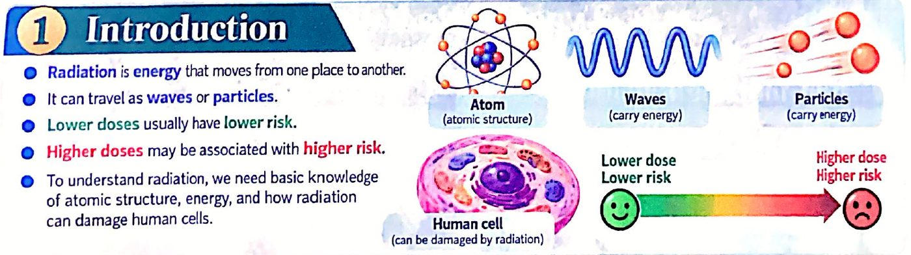
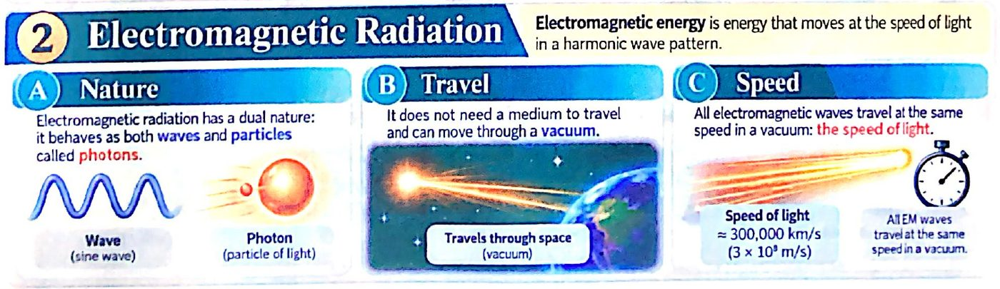
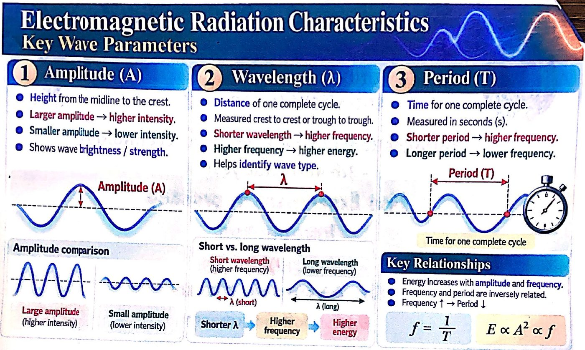
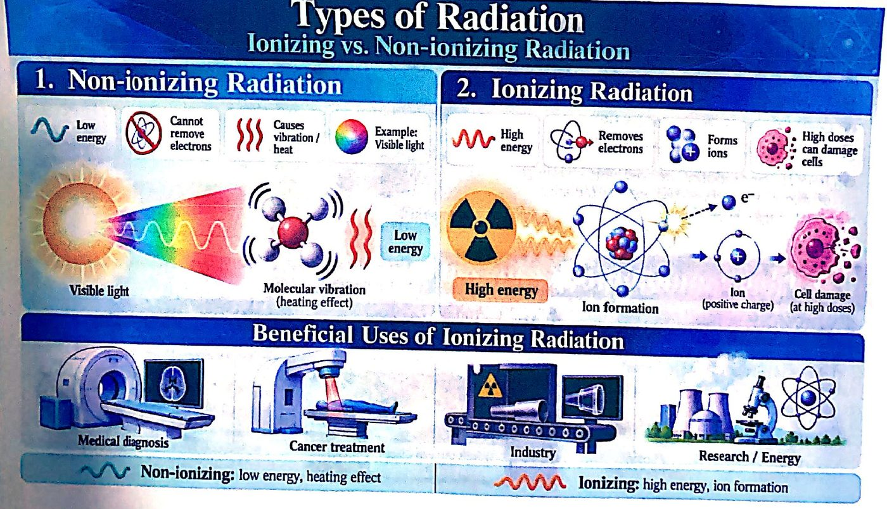
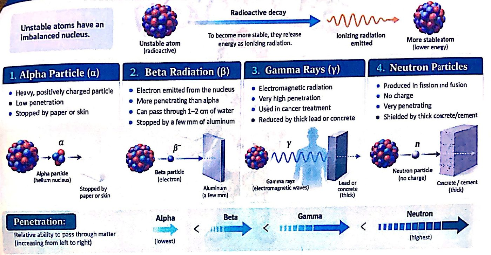
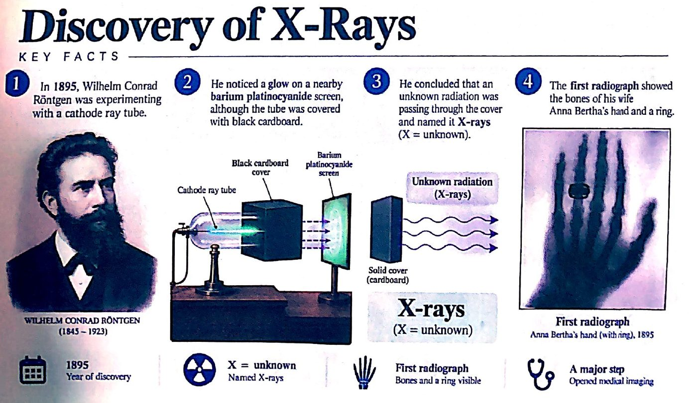

مقدمة في الإشعاع وأنواعهConventional Radiological Equipment Technology — First Experiment in practice: Introduction
عملي · م01 · 4.8 دقيقةأقسام المحاضرة (6)
- مقدمةIntroduction
- الإشعاع الكهرومغناطيسيElectromagnetic Radiation
- خصائص الإشعاع الكهرومغناطيسيElectromagnetic Radiation Characteristics — Key Wave Parameters
- أنواع الإشعاع: المؤيِّن وغير المؤيِّنTypes of Radiation — Ionizing vs. Non-ionizing Radiation
- التحلّل الإشعاعي وأنواع الإشعاع المؤيِّنRadioactive Decay — Alpha, Beta, Gamma & Neutrons
- اكتشاف الأشعة السينيةDiscovery of X-Rays — Key Facts
مقدمةIntroduction
- • Radiation is energy that moves from one place to another.الإشعاع طاقة تنتقل من مكان إلى آخر.
- • It can travel as waves or particles.يمكن أن ينتقل على شكل موجات أو جسيمات.
- • Lower doses usually have lower risk.الجرعات الأقل عادةً خطرها أقل.
- • Higher doses may be associated with higher risk.الجرعات الأعلى قد يرتبط بها خطر أعلى.
- • To understand radiation, we need basic knowledge of atomic structure, energy, and how radiation can damage human cells.لفهم الإشعاع نحتاج معرفة أساسية بتركيب الذرة، والطاقة، وكيف يمكن للإشعاع أن يتلف خلايا الإنسان.

الإشعاع الكهرومغناطيسيElectromagnetic Radiation
Electromagnetic energy is energy that moves at the speed of light in a harmonic wave pattern.
الطاقة الكهرومغناطيسية طاقة تنتقل بسرعة الضوء بنمط موجي توافقي.
- • Nature: Electromagnetic radiation has a dual nature: it behaves as both waves and particles called photons.الطبيعة: للإشعاع الكهرومغناطيسي طبيعة مزدوجة: يتصرّف كموجات وكجسيمات تُسمّى الفوتونات.
- • Travel: It does not need a medium to travel and can move through a vacuum.الانتقال: لا يحتاج وسطاً لينتقل، ويمكنه الانتقال عبر الفراغ.
- • Speed: All electromagnetic waves travel at the same speed in a vacuum: the speed of light.السرعة: كل الموجات الكهرومغناطيسية تنتقل بالسرعة نفسها في الفراغ: سرعة الضوء.
Speed of light ≈ 300,000 km/s (3 × 10⁸ m/s)
سرعة الضوء ≈ 300,000 كم/ثانية (3 × 10⁸ م/ثانية).

خصائص الإشعاع الكهرومغناطيسيElectromagnetic Radiation Characteristics — Key Wave Parameters
السعة1 Amplitude (A)
- • Height from the midline to the crest.الارتفاع من الخط الأوسط إلى القمة.
- • Larger amplitude → higher intensity.سعة أكبر ← شدة أعلى.
- • Smaller amplitude → lower intensity.سعة أصغر ← شدة أقل.
- • Shows wave brightness / strength.تُظهر سطوع الموجة / قوّتها.
الطول الموجي2 Wavelength (λ)
- • Distance of one complete cycle.مسافة دورة كاملة واحدة.
- • Measured crest to crest or trough to trough.يُقاس من قمة إلى قمة أو من قاع إلى قاع.
- • Shorter wavelength → higher frequency.طول موجي أقصر ← تردد أعلى.
- • Higher frequency → higher energy.تردد أعلى ← طاقة أعلى.
- • Helps identify wave type.يساعد على تحديد نوع الموجة.
الزمن الدوري3 Period (T)
- • Time for one complete cycle.الزمن اللازم لدورة كاملة واحدة.
- • Measured in seconds (s).يُقاس بالثواني.
- • Shorter period → higher frequency.زمن دوري أقصر ← تردد أعلى.
- • Longer period → lower frequency.زمن دوري أطول ← تردد أقل.
العلاقات الأساسيةKey Relationships
- • Energy increases with amplitude and frequency.الطاقة تزداد بزيادة السعة والتردد.
- • Frequency and period are inversely related.التردد والزمن الدوري علاقتهما عكسية.
- • Frequency ↑ → Period ↓التردد ↑ ← الزمن الدوري ↓
f = 1/T · E ∝ A² ∝ f · Shorter λ → Higher frequency → Higher energy
المعادلتان: f = 1/T، وE ∝ A² ∝ f. وطول موجي أقصر ← تردد أعلى ← طاقة أعلى.

أنواع الإشعاع: المؤيِّن وغير المؤيِّنTypes of Radiation — Ionizing vs. Non-ionizing Radiation
الإشعاع غير المؤيِّن1. Non-ionizing Radiation
- • Low energyطاقة منخفضة
- • Cannot remove electronsلا يستطيع انتزاع الإلكترونات
- • Causes vibration / heatيسبّب اهتزازاً / حرارة
- • Example: Visible lightمثال: الضوء المرئي
الإشعاع المؤيِّن2. Ionizing Radiation
- • High energyطاقة عالية
- • Removes electronsينتزع الإلكترونات
- • Forms ionsيكوّن أيونات
- • High doses can damage cellsالجرعات العالية يمكن أن تتلف الخلايا
الاستعمالات المفيدة للإشعاع المؤيِّنBeneficial Uses of Ionizing Radiation
Medical diagnosis · Cancer treatment · Industry · Research / Energy
التشخيص الطبي، علاج السرطان، الصناعة، البحث العلمي / الطاقة.
- • Non-ionizing: low energy, heating effectغير المؤيِّن: طاقة منخفضة، تأثير حراري
- • Ionizing: high energy, ion formationالمؤيِّن: طاقة عالية، تكوين أيونات

التحلّل الإشعاعي وأنواع الإشعاع المؤيِّنRadioactive Decay — Alpha, Beta, Gamma & Neutrons
Unstable atoms have an imbalanced nucleus. To become more stable, they release energy as ionizing radiation.
الذرات غير المستقرة لها نواة غير متوازنة. ولكي تصبح أكثر استقراراً تطلق طاقة على شكل إشعاع مؤيِّن (التحلّل الإشعاعي)، فتتحوّل إلى ذرة أكثر استقراراً (طاقة أقل).
جسيم ألفا1. Alpha Particle (α)
- • Heavy, positively charged particleجسيم ثقيل موجب الشحنة
- • Low penetrationقدرة اختراق منخفضة
- • Stopped by paper or skinتوقفه الورقة أو الجلد
إشعاع بيتا2. Beta Radiation (β)
- • Electron emitted from the nucleusإلكترون ينبعث من النواة
- • More penetrating than alphaأكثر اختراقاً من ألفا
- • Can pass through 1–2 cm of waterيستطيع النفاذ عبر 1–2 سم من الماء
- • Stopped by a few mm of aluminumتوقفه بضعة ملّيمترات من الألمنيوم
أشعة غاما3. Gamma Rays (γ)
- • Electromagnetic radiationإشعاع كهرومغناطيسي
- • Very high penetrationقدرة اختراق عالية جداً
- • Used in cancer treatmentتُستعمل في علاج السرطان
- • Reduced by thick lead or concreteيقلّلها الرصاص أو الخرسانة السميكة
النيوترونات4. Neutron Particles
- • Produced in fission and fusionتنتج في الانشطار والاندماج النوويين
- • No chargeبلا شحنة
- • Very penetratingشديدة الاختراق
- • Shielded by thick concrete/cementتُحجب بالخرسانة / الإسمنت السميك
Penetration: Relative ability to pass through matter (increasing from left to right) Alpha (lowest) < Beta < Gamma < Neutron (highest)
الاختراق: القدرة النسبية على النفاذ عبر المادة (تزداد من اليسار إلى اليمين): ألفا (الأقل) < بيتا < غاما < النيوترون (الأعلى).

اكتشاف الأشعة السينيةDiscovery of X-Rays — Key Facts
- 1. In 1895, Wilhelm Conrad Röntgen was experimenting with a cathode ray tube.في عام 1895 كان فيلهلم كونراد رونتغن يجري تجارب على أنبوب أشعة الكاثود.
- 2. He noticed a glow on a nearby barium platinocyanide screen, although the tube was covered with black cardboard.لاحظ توهّجاً على شاشة بلاتينوسيانيد الباريوم القريبة، رغم أن الأنبوب كان مغطّى بورق مقوّى أسود.
- 3. He concluded that an unknown radiation was passing through the cover and named it X-rays (X = unknown).استنتج أن إشعاعاً مجهولاً ينفذ عبر الغطاء، فسمّاه الأشعة السينية (X = مجهول).
- 4. The first radiograph showed the bones of his wife Anna Bertha's hand and a ring.أول صورة شعاعية أظهرت عظام يد زوجته آنا بيرتا وخاتماً.
- • 1895: Year of discovery1895: سنة الاكتشاف
- • X = unknown: Named X-raysX = مجهول: سُمّيت الأشعة السينية
- • First radiograph: Bones and a ring visibleأول صورة شعاعية: ظهرت العظام والخاتم
- • A major step: Opened medical imagingخطوة كبرى: فتحت باب التصوير الطبي

المحاضرة مسموعة
نص الأستاذ بالإنكليزي مثل الأصل · 4.8 دقيقة. اضغط أي جملة تسمعها، أو مصطلح منقّط تسمع لفظه ومعناه.
Introductionمقدمة
Introduction
Radiation is energy that moves from one place to another.
It can travel as waves or particles.
Lower doses usually have lower risk.
Higher doses may be associated with higher risk.
To understand radiation, we need basic knowledge of atomic structure, energy, and how radiation can damage human cells.
Electromagnetic Radiationالإشعاع الكهرومغناطيسي
Electromagnetic Radiation
Electromagnetic energy is energy that moves at the speed of light in a harmonic wave pattern.
Nature: Electromagnetic radiation has a dual nature: it behaves as both waves and particles called photons.
Travel: It does not need a medium to travel and can move through a vacuum.
Speed: All electromagnetic waves travel at the same speed in a vacuum: the speed of light.
Speed of light ≈ 300,000 km/s (3 × 10⁸ m/s)
Electromagnetic Radiation Characteristics — Key Wave Parametersخصائص الإشعاع الكهرومغناطيسي
Electromagnetic Radiation Characteristics — Key Wave Parameters
1 Amplitude (A)
Height from the midline to the crest.
Larger amplitude → higher intensity.
Smaller amplitude → lower intensity.
Shows wave brightness / strength.
2 Wavelength (λ)
Distance of one complete cycle.
Measured crest to crest or trough to trough.
Shorter wavelength → higher frequency.
Higher frequency → higher energy.
Helps identify wave type.
3 Period (T)
Time for one complete cycle.
Measured in seconds (s).
Shorter period → higher frequency.
Longer period → lower frequency.
Key Relationships
Energy increases with amplitude and frequency.
Frequency and period are inversely related.
Frequency ↑ → Period ↓
f = 1/T · E ∝ A² ∝ f · Shorter λ → Higher frequency → Higher energy
Types of Radiation — Ionizing vs. Non-ionizing Radiationأنواع الإشعاع: المؤيِّن وغير المؤيِّن
Types of Radiation — Ionizing vs. Non-ionizing Radiation
1. Non-ionizing Radiation
Low energy
Cannot remove electrons
Causes vibration / heat
Example: Visible light
2. Ionizing Radiation
High energy
Removes electrons
Forms ions
High doses can damage cells
Beneficial Uses of Ionizing Radiation
Medical diagnosis · Cancer treatment · Industry · Research / Energy
Non-ionizing: low energy, heating effect
Ionizing: high energy, ion formation
Radioactive Decay — Alpha, Beta, Gamma & Neutronsالتحلّل الإشعاعي وأنواع الإشعاع المؤيِّن
Radioactive Decay — Alpha, Beta, Gamma & Neutrons
Unstable atoms have an imbalanced nucleus. To become more stable, they release energy as ionizing radiation.
1. Alpha Particle (α)
Heavy, positively charged particle
Low penetration
Stopped by paper or skin
2. Beta Radiation (β)
Electron emitted from the nucleus
More penetrating than alpha
Can pass through 1–2 cm of water
Stopped by a few mm of aluminum
3. Gamma Rays (γ)
Electromagnetic radiation
Very high penetration
Used in cancer treatment
Reduced by thick lead or concrete
4. Neutron Particles
Produced in fission and fusion
No charge
Very penetrating
Shielded by thick concrete/cement
Penetration: Relative ability to pass through matter (increasing from left to right) Alpha (lowest) < Beta < Gamma < Neutron (highest)
Discovery of X-Rays — Key Factsاكتشاف الأشعة السينية
Discovery of X-Rays — Key Facts
In 1895, Wilhelm Conrad Röntgen was experimenting with a cathode ray tube.
He noticed a glow on a nearby barium platinocyanide screen, although the tube was covered with black cardboard.
He concluded that an unknown radiation was passing through the cover and named it X-rays (X = unknown).
The first radiograph showed the bones of his wife Anna Bertha's hand and a ring.
1895: Year of discovery
X = unknown: Named X-rays
First radiograph: Bones and a ring visible
A major step: Opened medical imaging
كل أسئلة المحاضرة: السؤال إنكليزي وتحته عربي، وكل خيار بلغتين، والجواب الصحيح معلّم ويّاه «ليش صح» · 0.2 MB
قراءة الأسئلة تحميلاضغط أي مصطلح منقّط تسمع لفظه ومعناه.